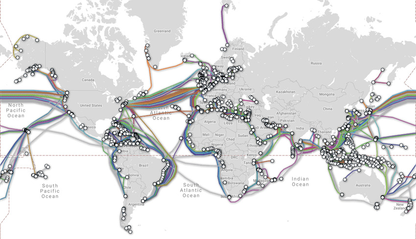
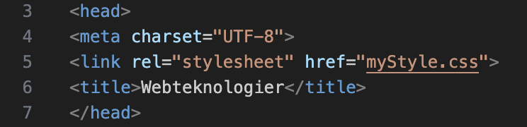
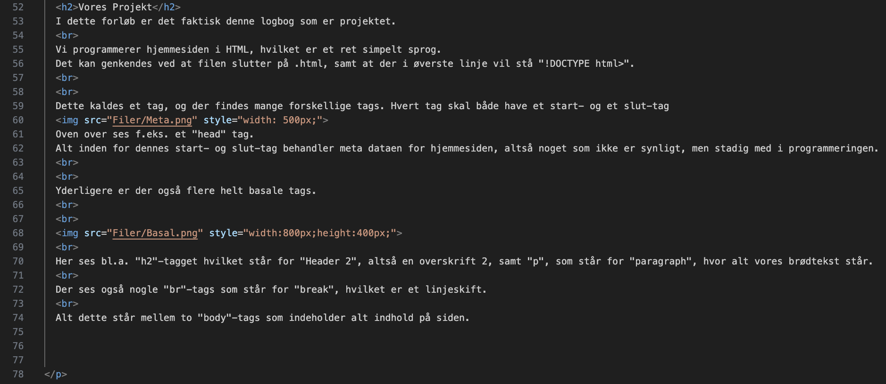
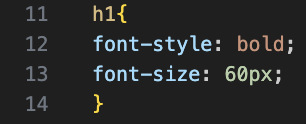

Webteknologier
Hvad er internettet?
Der er ikke så mange der rent faktisk ved, hvad internettet er eller hvem der styrer det. Vint Cerf, sammen med Bob Kahn begyndte i 1970’erne at udvikle det vi kalder internettet.
Internettet var i virkeligheden en måde at kommunikere decentraliseret, så man kunne undgå et sammenbrud i tilfælde af atomangreb. Det blev i starten udviklet for Forsvarsminsteriet i USA.
Nu bruges det til at forbinde alle i verden, med en masse små centraler over alt i verden.
Der er ingen, men samtidigt alle der styrer nettet.
Vint Cerfs begrundelse for at offentliggøre teknologien var at "Min viden kan være til gavn for andre".
Der findes 3 måder at sende information over internettet:
- Elektrisk (Ethernet) - Kobberkabler, som er meget billige, men ikke særligt effektive over længere distancer
- Fiber optic (lys gennem glas, kan sende gennem flere vinkler pr. wire) - Kan sende over lange distancer og med lysets hastighed
- Radiobølger (trådløst) - Virker kun over meget kort afstand og kan være ret ustabilt, men er meget lettere at have med at gøre, da man ikke skal bruge kabler
Hvad bruges mest?
Der er nok ikke én af mulighederne som er mest brugt igennem verden. Elektriske forbindelser findes overalt, f.eks. internet kabler, mens radio bølger bruges til bl.a. wifi og trådløse høretelefoner.
Fiber optiske kabler bruges især til lang distance, f.eks. ligger der et massivt netværk af fiber optiske kabler under Atlanterhavet, som forbinder Amerika med Europa (se billede under).

Vores Projekt
I dette forløb er det faktisk denne logbog som er projektet.
Vi programmerer hjemmesiden i HTML, hvilket er et ret simpelt sprog.
Det kan genkendes ved at filen slutter på .html, samt at der i øverste linje vil stå "!DOCTYPE html>".
Dette kaldes et tag, og der findes mange forskellige tags. Hvert tag skal både have et start- og et slut-tag

Oven over ses f.eks. et "head" tag.
Alt inden for dennes start- og slut-tag behandler meta dataen for hjemmesiden, altså noget som ikke er synligt, men stadig med i programmeringen.
Yderligere er der også flere helt basale tags.

Her ses bl.a. "h2"-tagget hvilket står for "Header 2", altså en overskrift 2, samt "p", som står for "paragraph", hvor alt vores brødtekst står.
Der ses også nogle "br"-tags som står for "break", hvilket er et linjeskift.
Alt dette står mellem to "body"-tags som indeholder alt indhold på siden.
Style og CSS
Den kvikke læser har måske opdaget "style" betingelsen i "img"-tagget på ovenstående billede. Dette er en af måderne man kan ændre på et tags udseende.
En anden måde er vha. en CSS fil. En CSS fil eller en "style fil" bruges netop til at ændre style på et bestemt tag, uden at man skal skrive det hver gang.
Det er altså en måde at lave et "preset" til f.eks. ens overskrifter eller paragraf. Det er også i dette dokument at man kan bestemme f.eks. baggrundsfarven af hjemmesiden.

Her ses f.eks. en del af min CSS fil for netop denne hjemmeside.
Ved at skrive "h1{}" indikerer man at alt inden for de krøllede parenteser skal gælde for mit "Header 1"-tag.
Her kan det så ses at jeg har sat skriftstørrelsen til 60px, samt at det skal være fed skrift. Dette kan ses i min overskrift helt øverst.
Hvis du nu ikke gider at scrolle hele vejen op kan du få et eksempel
Lige her